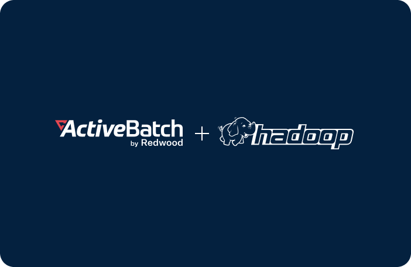

Ensuring effective day-to-day operations, fostering a positive customer experience and capturing key business intelligence all hinge on having reliable real-time data sources, data integrity and data processing. The magnitude of data and data
sources, the proliferation of applications and growing number of cloud-based systems within businesses’ IT ecosystems make data warehousing even more complex, posing more challenges to strapped IT teams. Many have smartly automated
business processes when possible, even on a small scale, with limited functionality.
Using ad-hoc automation solutions, automation scripts and ETL (extract, transform and load) tools to collect information from applications, siloed systems and external data sources create a fragmented system.
But, designing end-to-end process orchestration is feasible through automation tools like ActiveBatch by Redwood. IT teams can quickly spin up automation without advanced development skills and become more dynamic for evolving business requirements.
Data warehouse and ETL process automation tools
Workload automation can simplify data warehouses by consolidating and coordinating multiple data management tools, including testing solutions and data analytics
software, giving IT a single dashboard for automating, monitoring and managing critical data processes. ActiveBatch provides the functionality to:
Automate data lake updates for improved data quality and reporting
Manage and control big data sets across different IT systems to ensure real-time delivery of accurate reports and business intelligence
Set constraints to wait for file completions before starting dependent workflows to ensure reliable data
Streamline ETL testing by incorporating and automating tools needed for data validation, data profiling and testing processes
ActiveBatch Job Steps Library
The ActiveBatch Job Steps Library provides hundreds of prebuilt job steps, enabling IT teams to use connectors to simplify
and streamline data warehousing and ETL processes without writing scripts. The unique and intuitive drag-and-drop workflow designer from ActiveBatch lets users quickly build reliable, end-to-end workflows that manage data and dependencies
across disparate, heterogeneous systems and technologies.
The ActiveBatch Service Library extends the power of the ActiveBatch Job Steps Library with full API accessibility for users to load and execute WSDLs, SOAP Web Services, RESTful Services and more across any application or technology with an API.
BI tools, including IBM Cognos BI, plus Microsoft apps suite, enterprise resource planning (ERP) and business process management (BPM) tools
On-premises or cloud data warehouses, including VMware, Amazon EC2 and Microsoft Azure for hybrid-IT and multi-cloud orchestration
ActiveBatch's Super REST API Adapter allows DevOps to rapidly build connections into virtually any endpoint, enabling IT to manage source data easily, regardless of
the underlying technology.
Advanced automation scheduling
Trigger data warehousing and ETL processes based on external conditions using ActiveBatch’s rich, event-driven architecture. Job triggers include email, file events, FTP file triggers, data transformations, message queues and more.
Reduce
delays and false starts with constraint-based scheduling and granular date/time scheduling. Have your IT team worry less about routine
processes and focus more on innovation.
Auditing and governance
Users can standardize compliance policies for copious amounts of data across the enterprise by automating and orchestrating processes from a single
platform. ActiveBatch allows you to:
Streamline business rules and transformation rules across teams, departments and geographic locations
Drive governance throughout the enterprise with full audit trails on all jobs and workflows
Prevent unauthorized access with granular permissions, multi-factor authentication and privileged access management
Minimize the impact of unwanted changes with complete revision histories and version rollbacks

Big data and Hadoop automation
ActiveBatch simplifies process development and ongoing maintenance through a unique, templated approach to automating and integrating the Hadoop Ecosystem. ActiveBatch workload automation runs
within the framework of a Hadoop grid or cluster from prominent distributors such as Cloudera, MapR, Hortonworks, Amazon and others.
Numerous Hadoop subsets are supporting, including:
Pig
HBase
Sqoop
Spark
Oozie
Hive
HDFS
MapReduce
Big Data and Hadoop automation benefits
Reduce the time and cost spent on data migrations, data testing and maintenance
Minimize the risk of manual errors by decreasing dependence on custom scripts
Optimize the efficiency and speed of ETL and MFT workloads for accurate, up-to-date business reports
Eliminate wait times with an HDFS file trigger to instantiate workloads beyond interval, date and time or constraints
ETL automation tools enable IT teams to perform ETL (Extract, Transform, Load) tasks without manual intervention. ETL is a data integration process that transfers raw data into a data warehouse or other data system. ETL processes are increasingly complex as data sources become more numerous and diverse. To manage ETL at scale, IT teams must be able to build reliable, automated ETL processes. This can be done with extensible workload automation software that provides automated ETL tasks out of the box.
A database is a collection of structured data stored within a computer system, while a database is a computer system used to perform queries, reporting and analysis. Databases typically support Online Transaction Processing (OLTP), while data warehouses typically support Online Analytical Processing (OLAP) using data from various sources. Workload automation solutions can readily integrate common data warehouse systems, enabling IT to streamline data pipelines across the enterprise.
Yes, you can automate ETL processes with workload automation solutions. Workload automation solutions can provide prebuilt integrations with Big Data platforms, data warehouse systems and more while simplifying the creation of REST API adapters that allow IT to connect virtually any endpoint. Workload automation solutions such as ActiveBatch provide a centralized control panel for building, monitoring and managing data processes across the enterprise.